유선
케이블 사용
안정적이고 빠르게 데이터를 전송
장치를 배치하거나 활용하는 데에 장소의 제약
01
p.30
서로 다른 (컴퓨팅) 기기들이 연결된 통신망
케이블 사용
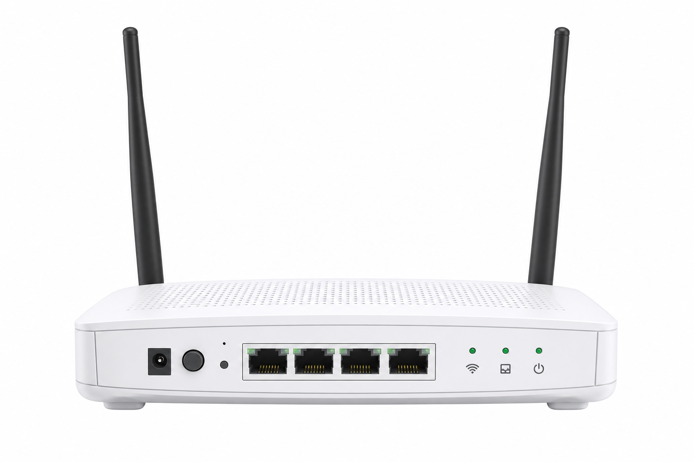
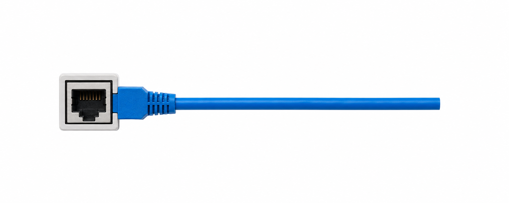
무선 주파수 사용
02
p.31
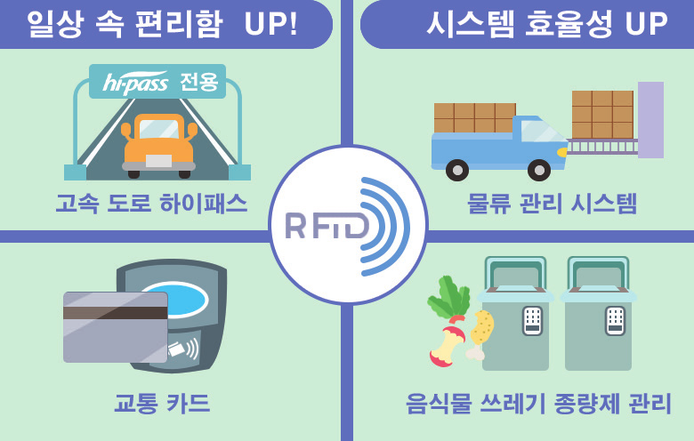
소형 반도체 칩 내장 태그·라벨·카드 등에 저장된 데이터를 무선 주파수로 읽음
교통 카드 · 하이패스 · 상품 정보 인식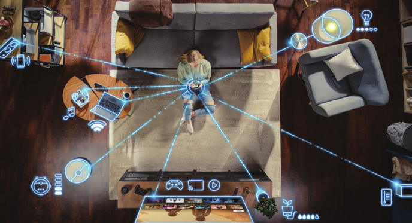
랜을 무선화하여 가까운 거리에서 데이터를 주고받음
비용이 저렴하고 전송 속도가 빠름10m 이내에서 무선으로 데이터를 주고받음
무선 이어폰 · 인공지능 스피커 · 페어링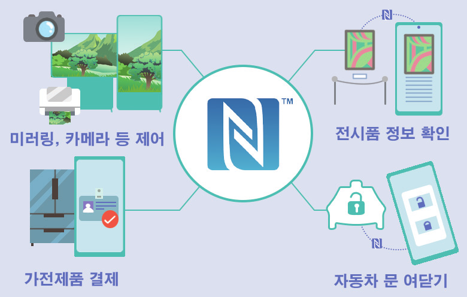
10cm 내 가까운 거리에서 접촉하지 않고 데이터를 주고받음
비용 지불 · 티켓 발매 · 출입 통제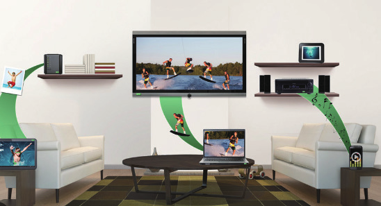
서로 다른 기기의 화면을 공유
미러링 · 미라캐스트 · DLNA03
p.32
물건이 인터넷에 연결되어 데이터를 주고받을 수 있는 시스템
04
p.33~34
05
p.35
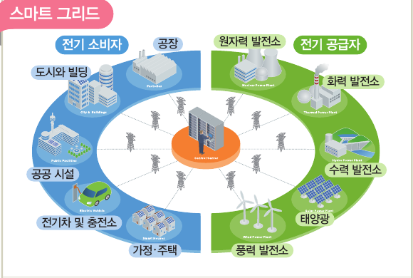
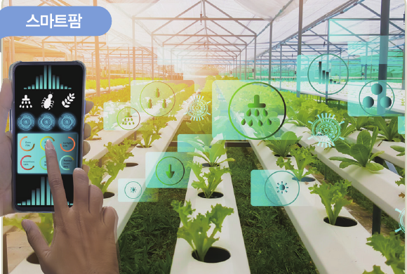
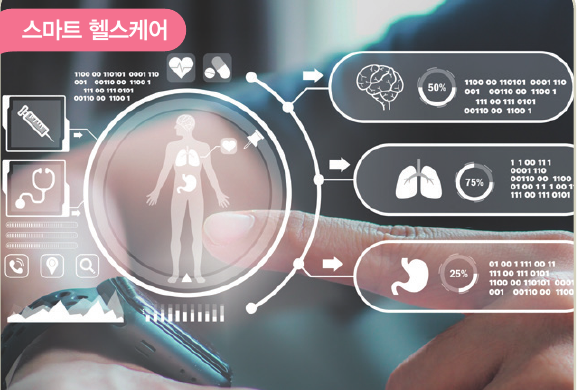
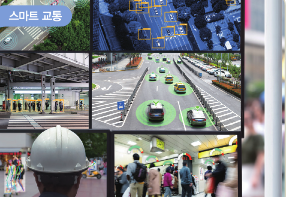
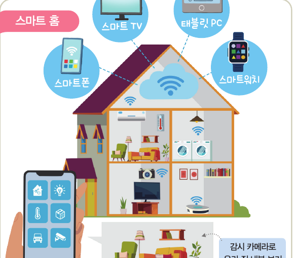
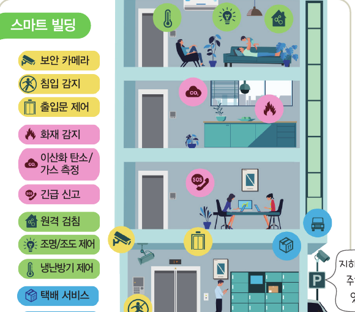
1 / 5